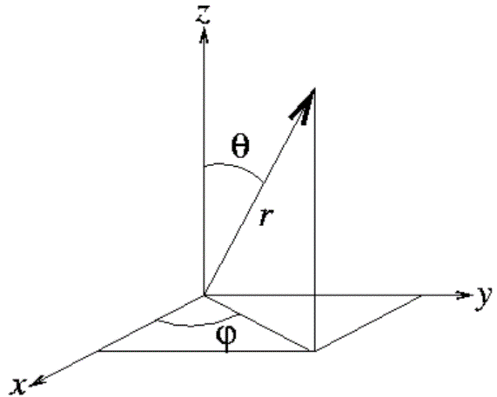
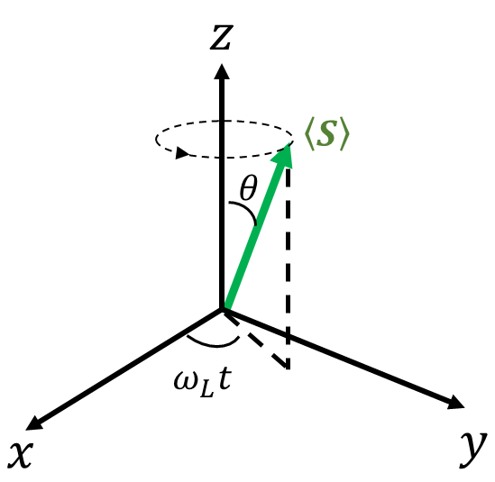

12 Exercise Solutions
12.1 Exercises for Chapter 1
1.1 Decide whether each of the following forms a Hilbert space.
All complex numbers.
All vectors in three-dimensional Cartesian space.
Solutions \(\psi (x)\) of the following equation, where \(E\) is real and \(V(x)\) is a finite continuous function of \(x\).
\[ \left[ { - \frac{{{\hbar ^2}}}{{2m}}\frac{{{d^2}}}{{d{x^2}}} + V(x)} \right]\psi (x) = E\psi (x) \tag{12.1}\]
- Yes. (b) A real linear space, not a complex linear space. (c) Yes.
1.2 Prove that \(\left\langle {\alpha } \mathrel{\left \vert {\vphantom {\alpha \alpha }} \right. \kern-1.2pt } {\alpha } \right\rangle \left\langle {\beta } \mathrel{\left \vert {\vphantom {\beta \beta }} \right. \kern-1.2pt } {\beta } \right\rangle \ge {\left\vert {\left\langle {\alpha } \mathrel{\left \vert {\vphantom {\alpha \beta }} \right. \kern-1.2pt } {\beta } \right\rangle } \right\vert ^2}\).
Hint: Construct a suitable \(\vert \psi \rangle\) as a linear combination of \(\vert \alpha\rangle\) and \(\vert \beta\rangle\), and use Equation 1.11, \(\left\langle {\psi } \mathrel{\left \vert {\vphantom {\psi \psi }} \right. \kern-1.2pt } {\psi } \right\rangle \ge 0\).
Solution: Let \(\vert \psi\rangle = \left( {\langle \beta\vert \beta\rangle \vert \alpha\rangle - \langle \beta\vert \alpha\rangle \vert \beta\rangle } \right)\).
1.3 A two-dimensional vector \(\left\vert \psi \right\rangle\) expands in the basis \(\left\{ {\vert {\alpha _1}\rangle ,\vert {\alpha _2}\rangle } \right\}\) as
\[ \vert \psi \rangle = \vert {\alpha _1}\rangle + 3\vert {\alpha _3}\rangle \tag{12.2}\]
Another basis \(\left\{ {\vert {\beta _1}\rangle ,\vert {\beta _2}\rangle } \right\}\) satisfies
\[ \left\vert {{\beta _1}} \right\rangle = \frac{1}{{\sqrt 2 }}\left( {\vert {\alpha _1}\rangle + i\vert {\alpha _2}\rangle } \right), \qquad \left\vert {{\beta _2}} \right\rangle = \frac{1}{{\sqrt 2 }}\left( {\vert {\alpha _1}\rangle - i\vert {\alpha _2}\rangle } \right) \tag{12.3}\]
Find the expansion of \(\left\vert \psi \right\rangle\) in the latter basis.
Solution, method 1: Express \(\vert {\alpha _i}\rangle\) in terms of \(\vert {\beta _i}\rangle\) and substitute into the expression for \(\vert \psi\rangle\).
Method 2: Use matrices. First write \(\vert \psi \rangle\) and \(\vert {\beta _i}\rangle\) in the \(\alpha\) basis:
\[ \left\vert \psi \right\rangle \buildrel\textstyle.\over= \left( {\begin{array}{*{20}{c}} 1\\ 3 \end{array}} \right), \qquad \left\vert {{\beta _1}} \right\rangle \buildrel\textstyle.\over= \frac{1}{{\sqrt 2 }}\left( {\begin{array}{*{20}{c}} 1\\ i \end{array}} \right), \qquad \left\vert {{\beta _2}} \right\rangle \buildrel\textstyle.\over= \frac{1}{{\sqrt 2 }}\left( {\begin{array}{*{20}{c}} 1\\ { - i} \end{array}} \right) \tag{12.4}\]
Use the relation between bra and ket matrices:
\[ \left\langle {{\beta _1}} \right\vert = \frac{1}{{\sqrt 2 }}\left( {1,\; - i} \right), \qquad \left\langle {{\beta _2}} \right\vert = \frac{1}{{\sqrt 2 }}\left( {1,\; + i} \right) \tag{12.5}\]
Finally, by Equation 1.25, the matrix of \(\left\vert \psi \right\rangle\) in the \(\beta\) basis is
\[ \left\vert \psi \right\rangle \buildrel\textstyle.\over= \left( {\begin{array}{*{20}{c}} {\left\langle {{{\beta _1}}} \mathrel{\left \vert {\vphantom {{{\beta _1}} \psi }} \right. \kern-1.2pt } {\psi } \right\rangle }\\ {\left\langle {{{\beta _2}}} \mathrel{\left \vert {\vphantom {{{\beta _2}} \psi }} \right. \kern-1.2pt } {\psi } \right\rangle } \end{array}} \right){\rm{ = }}\left( {\begin{array}{*{20}{c}} {\frac{1}{{\sqrt 2 }}\left( {1, - i} \right)\left( {\begin{array}{*{20}{c}} 1\\ 3 \end{array}} \right)}\\ {\frac{1}{{\sqrt 2 }}\left( {1,i} \right)\left( {\begin{array}{*{20}{c}} 1\\ 3 \end{array}} \right)} \end{array}} \right) = \left( {\begin{array}{*{20}{c}} {\frac{{1 - 3i}}{{\sqrt 2 }}}\\ {\frac{{1 + 3i}}{{\sqrt 2 }}} \end{array}} \right) \tag{12.6}\]
12.2 Exercises for Chapter 2
2.1 Let {\(\left\vert U \right\rangle ,\left\vert D \right\rangle\)} be a basis of a two-dimensional vector space. The basis vectors have matrices
\[ \vert U\rangle = \left( {\begin{array}{*{20}{c}} {\langle U\vert U\rangle }\\ {\langle D\vert U\rangle } \end{array}} \right) = \left( {\begin{array}{*{20}{c}} 1\\ 0 \end{array}} \right), \qquad \vert D\rangle = \left( {\begin{array}{*{20}{c}} {\langle U\vert D\rangle }\\ {\langle D\vert D\rangle } \end{array}} \right) = \left( {\begin{array}{*{20}{c}} 0\\ 1 \end{array}} \right), \tag{12.7}\]
Three operators \(\hat A,\hat B,\hat C\) have the following properties:
\[ \begin{array}{l} \hat A\vert U\rangle = \vert D\rangle , & \hat A\vert D\rangle = \vert U\rangle \\ \hat B\vert U\rangle = i\vert D\rangle , & \hat B\vert D\rangle = - i\vert U\rangle \\ \hat C\vert U\rangle = \vert U\rangle , & \hat C\vert D\rangle = - \vert D\rangle \end{array} \tag{12.8}\]
Write their matrices in this basis.
\[ \hat A \buildrel\textstyle.\over= \left( {\begin{array}{*{20}{c}} {\langle U\vert {\hat A}\vert U\rangle }&{\langle U\vert {\hat A}\vert D\rangle }\\ {\langle D\vert {\hat A}\vert U\rangle }&{\langle D\vert {\hat A}\vert D\rangle } \end{array}} \right) = \left( {\begin{array}{*{20}{c}} {\langle U\vert D\rangle }&{\langle U\vert U\rangle }\\ {\langle D\vert D\rangle }&{\langle D\vert U\rangle } \end{array}} \right) = \left( {\begin{array}{*{20}{c}} 0&1\\ 1&0 \end{array}} \right) \tag{12.9}\]
Similarly,
\[ \begin{array}{l} \hat B \buildrel\textstyle.\over= \left( {\begin{array}{*{20}{c}} {i\langle U\vert D\rangle }&{ - i\langle U\vert U\rangle }\\ {i\langle D\vert D\rangle }&{ - i\langle D\vert U\rangle } \end{array}} \right) = \left( {\begin{array}{*{20}{c}} 0&{ - i}\\ i&0 \end{array}} \right)\\ \hat C \buildrel\textstyle.\over= \left( {\begin{array}{*{20}{c}} {\langle U\vert U\rangle }&{\langle U\vert D\rangle }\\ {\langle D\vert U\rangle }&{ - \langle D\vert D\rangle } \end{array}} \right) = \left( {\begin{array}{*{20}{c}} 1&0\\ 0&{ - 1} \end{array}} \right) \end{array} \tag{12.10}\]
2.2 Let \(\left\vert 1 \right\rangle ,\left\vert 2 \right\rangle\) be two basis vectors of a two-dimensional space, and let an operator \(\hat H\) be
\[ \hat H = \cos \theta \left\vert 1 \right\rangle \left\langle 1 \right\vert + \sin \theta \left\vert 1 \right\rangle \left\langle 2 \right\vert + \sin \theta \left\vert 2 \right\rangle \left\langle 1 \right\vert - \cos \theta \left\vert 2 \right\rangle \left\langle 2 \right\vert \tag{12.11}\]
Find the eigenvalues and corresponding eigenstates of \(\hat H\).
Solution: Seek all eigenvalues \(\lambda\) and eigenvectors \(\vert \lambda\rangle\) satisfying \(\hat H\vert \lambda\rangle = \lambda \vert \lambda\rangle\). First write this vector equation in the \(\left\{ {\left\vert 1 \right\rangle ,\left\vert 2 \right\rangle } \right\}\) basis.
The matrix elements of \(\hat H\) are \(\left\langle i \right\vert {\hat H}\left\vert j \right\rangle\). Using \(\left\langle {i} \mathrel{\left \vert {\vphantom {i j}} \right. \kern-1.2pt } {j} \right\rangle = {\delta _{ij}}\), its matrix in the \(\left\{ {\left\vert 1 \right\rangle ,\left\vert 2 \right\rangle } \right\}\) basis is
\[ \hat H \buildrel\textstyle.\over= \left( {\begin{array}{*{20}{c}} {\cos \theta }&{\sin \theta }\\ {\sin \theta }&{ - \cos \theta } \end{array}} \right) \tag{12.12}\]
A nonzero solution exists only if the following determinant vanishes:
\[ \left\vert {\begin{array}{*{20}{c}} {\cos \theta - \lambda }&{\sin \theta }\\ {\sin \theta }&{ - \cos \theta - \lambda } \end{array}} \right\vert = 0 \Rightarrow ({\lambda ^2} - {\cos ^2}\theta ) - {\sin ^2}\theta = 0 \Rightarrow \lambda = \pm 1 \tag{12.13}\]
Let the eigenvector \(\left. \vert {\lambda }_{1}\right\rangle ={a}_{1}\left. \vert 1\right\rangle +{a}_{2}\left. \vert 2\right\rangle\) correspond to \({\lambda }_{1}=1\).
\[ \left( {\begin{array}{*{20}{c}} {\cos \theta }&{\sin \theta }\\ {\sin \theta }&{ - \cos \theta } \end{array}} \right)\left( {\begin{array}{*{20}{c}} {{a_1}}\\ {{a_2}} \end{array}} \right) = 1\left( {\begin{array}{*{20}{c}} {{a_1}}\\ {{a_2}} \end{array}} \right) \tag{12.14}\]
\[ \begin{array}{c} {a_1}\cos \theta + {a_2}\sin \theta = {a_1}\\ {a_2}\cos \frac{\theta }{2} = {a_1}\sin \frac{\theta }{2} \end{array} \tag{12.15}\]
\[ \therefore {a_1} = \cos \frac{\theta }{2}, \qquad {a_2} = \sin \frac{\theta }{2} \tag{12.16}\]
\[ {\lambda _1} = 1, \qquad \qquad \left\vert {{\lambda _1}} \right\rangle = \left( {\begin{array}{*{20}{c}} {\cos \frac{\theta }{2}}\\ {\sin \frac{\theta }{2}} \end{array}} \right) \tag{12.17}\]
Similarly,
\[ {\lambda _2} = - 1, \qquad \qquad \left\vert {{\lambda _2}} \right\rangle = \left( {\begin{array}{*{20}{c}} { - \sin \frac{\theta }{2}}\\ {\cos \frac{\theta }{2}} \end{array}} \right) \tag{12.18}\]
2.3* A Hermitian operator \(\hat A\) has nondegenerate eigenvalues \(\left\{ {{a_i}} \right\}\) and eigenstates \(\left\{ {\left\vert {{a_i}} \right\rangle } \right\}\). Find the eigenvalues and eigenstates of \({\hat A^{ - 1}}\).
Solution: Since \(\left\vert {{a_i}} \right\rangle = \hat I\left\vert {{a_i}} \right\rangle = {\hat A^{ - 1}}\hat A\left\vert {{a_i}} \right\rangle = {\hat A^{ - 1}}{a_i}\left\vert {{a_i}} \right\rangle = {a_i}{\hat A^{ - 1}}\left\vert {{a_i}} \right\rangle\),
we have \({\hat A^{ - 1}}\left\vert {{a_i}} \right\rangle = \frac{1}{{{a_i}}}\left\vert {{a_i}} \right\rangle\).
Thus \({\hat A^{ - 1}}\) has eigenvalues \({1 \mathord{\left/ {\vphantom {1 {{a_i}}}} \right. \kern-1.2pt } {{a_i}}}\) with eigenstates \(\left\vert {{a_i}} \right\rangle\).
2.4 Prove that, for a Hermitian operator \(\hat A\), the eigenvalues of \({\hat A^2}\) are nonnegative.
Solution: Since \(\hat A = {\hat A^ + }\),
for any vector \(\vert \psi \rangle\), \(\langle \psi\vert {\hat A^2}\vert \psi\rangle = \langle \psi\vert {\hat A^\dag }\hat A\vert \psi\rangle = \left( {\langle \psi\vert {{\hat A}^\dag }} \right)\left( {\hat A\vert \psi\rangle } \right) \ge 0\).
Let \(b\) and \(\vert b\rangle\) be an eigenvalue and corresponding eigenstate of \({\hat A^2}\).
Then \(\langle b\vert {\hat A^2}\vert b\rangle = \langle b\vert b\vert b\rangle = b\langle b\vert b\rangle \ge 0\). Since \(\langle b\vert b\rangle \ge 0\), we obtain \(b \ge 0\), as required.
2.5 Prove that, for any operator \(\hat A\), \(\hat A{\hat A^\dag }\) is Hermitian.
Solution: \({\left( {\hat A{{\hat A}^\dag }} \right)^\dag } = {\left( {{{\hat A}^\dag }} \right)^\dag }{\hat A^\dag } = \hat A{\hat A^\dag }\), which proves the assertion.
12.3 Exercises for Chapter 3
3.1 A spin-1/2 particle initially has spin state \(\left. \vert \psi \right\rangle =\left. \vert U\right\rangle +\left. 2i\vert D\right\rangle\).
Normalize \(\left. \vert \psi \right\rangle\).
In \(\left. \vert \psi \right\rangle\), what is the probability that measuring \({\sigma }_{z}\) gives \(+1\)?
In \(\left. \vert \psi \right\rangle\), what is the probability that measuring \({\sigma }_{x}\) gives \(-1\)?
In \(\left. \vert \psi \right\rangle\), first measure \({\sigma }_{z}\), then \({\sigma }_{x}\). What is the probability that both results are \(+1\)?
In \(\left. \vert \psi \right\rangle\), first measure \({\sigma }_{x}\), then \({\sigma }_{z}\). What is the probability that both results are \(+1\)?
Solution:
\[ \left. \vert \psi \right\rangle =\frac{\left. \vert U\right\rangle +\left. 2i\vert D\right\rangle }{\sqrt{\left\langle \psi \vert \psi \right\rangle }}=\frac{1}{\sqrt{5}}\left( \left. \vert U\right\rangle +\left. 2i\vert D\right\rangle \right) \tag{12.19}\]
\[ {\left\vert \left\langle U\vert \psi \right\rangle \right\vert }^{2}=1/5 \tag{12.20}\]
\[ {\left\vert \left\langle L\vert \psi \right\rangle \right\vert }^{2}={\left\vert \frac{1}{\sqrt{2}}\left( \left\langle U\vert \right. -\left\langle D\vert \right. \right) \frac{1}{\sqrt{5}}\left( \left. \vert U\right\rangle +\left. 2i\vert D\right\rangle \right) \right\vert }^{2}=\frac{1}{10}{\left\vert \left( 1-2i\right) \right\vert }^{2}=\frac{1}{2} \tag{12.21}\]
\[ {\left\vert \left\langle U\vert \psi \right\rangle \right\vert }^{2}{\left\vert \left\langle R\vert U\right\rangle \right\vert }^{2}=\frac{1}{5}\times \frac{1}{2}=\frac{1}{10} \tag{12.22}\]
\[ {\left\vert \left\langle R\vert \psi \right\rangle \right\vert }^{2}{\left\vert \left\langle U\vert R\right\rangle \right\vert }^{2}=\left( 1-{\left\vert \left\langle L\vert \psi \right\rangle \right\vert }^{2}\right) \times \frac{1}{2}=\frac{1}{4} \tag{12.23}\]
3.2 The electron’s magnetic moment \({\bf{\hat \mu }}\) is proportional to its spin \({\bf{\hat S}}\), with \({\bf{\hat \mu }} = {{ - 2{\mu _B}{\bf{\hat S}}} \mathord{\left/ {\vphantom {{ - 2{\mu _B}{\bf{\hat S}}} \hbar }} \right. \kern-1.2pt } \hbar }\). A stationary electron is placed in a uniform magnetic field of magnitude \(B\). Using the magnetic energy \(\hat H = - {\bf{\hat \mu }} \cdot {\bf{B}}\), find the eigenvalues and eigenstates of \(\hat H\) and the energy-level spacing. Hint: Treat the field as a classical quantity, a number.
Solution: Choose the field along positive \(z\). The Hamiltonian is
\[ \hat H = - {\bf{\mu }} \cdot {\bf{B}} = - B{\hat \mu _z} = \frac{{2{\mu _{\rm{B}}}}}{\hbar }B{\hat S_z} = {\mu _{\rm{B}}}B{\hat \sigma _z} \tag{12.24}\]
This is a constant times \({\hat \sigma _z}\), so
\[ \begin{array}{l} \hat H\left\vert U \right\rangle = {\mu _{\rm{B}}}B{{\hat \sigma }_z}\left\vert U \right\rangle = {\mu _{\rm{B}}}B\left\vert U \right\rangle \\ \hat H\left\vert D \right\rangle = {\mu _{\rm{B}}}B{{\hat \sigma }_z}\left\vert D \right\rangle = - {\mu _{\rm{B}}}B\left\vert D \right\rangle \end{array} \tag{12.25}\]
Thus the energy eigenstates in a constant magnetic field are eigenstates of \({\hat \sigma _z}\). Their energies are the eigenvalues of \({\hat \sigma _z}\) multiplied by \({\mu _{\rm{B}}}B\). The level spacing is \(\Delta E=2{\mu }_{B}B\).
If we define \(2{\mu }_{B}B\equiv \hbar {\omega }_{L}\), the transition frequency is \({\omega }_{L}\). The frequency associated with magnetic splitting is also called the Larmor frequency.

3.3 As shown, the projection of \({\bf{\hat \sigma }}\) along direction \({\bf{n}}{\rm{(}}\theta {\rm{,}}\phi )\) is \({\hat \sigma _n}\).- Write the matrix of \({\hat \sigma _n}\) in the \({\hat \sigma _z}\) representation, and show that its eigenvalues are \(+ 1, - 1\), with eigenvectors
\[ \left\vert { + 1} \right\rangle \buildrel\textstyle.\over= \left( {\begin{array}{*{20}{c}} {\cos \frac{\theta }{2}}\\ {{e^{i\phi }}\sin \frac{\theta }{2}} \end{array}} \right), \qquad \left\vert { - 1} \right\rangle \buildrel\textstyle.\over= \left( {\begin{array}{*{20}{c}} {{e^{ - i\phi }}\sin \frac{\theta }{2}}\\ { - \cos \frac{\theta }{2}} \end{array}} \right) \tag{12.26}\]
If \({\hat \sigma _x}\) is known to equal \(1\), find the probability that \({\hat \sigma _n}\) equals \(-1\).
Find the expectation value \(\left( {\langle {{\hat \sigma }_x}\rangle ,\langle {{\hat \sigma }_y}\rangle ,\langle {{\hat \sigma }_z}\rangle } \right)\) of \({\bf{\sigma }}\) in state \(\left\vert {\hat n + } \right\rangle\).
Hint:
\[ {\hat \sigma _n} = {\bf{\hat \sigma }} \cdot {\bf{\hat n}} = \left( {{{\hat \sigma }_x}{\bf{\hat x}} + {{\hat \sigma }_y}{\bf{\hat y}} + {{\hat \sigma }_z}{\bf{\hat z}}} \right) \cdot \left( {{n_x}{\bf{\hat x}} + {n_y}{\bf{\hat y}} + {n_z}{\bf{\hat z}}} \right){\rm{ = }}{\hat \sigma _x}{n_x} + {\hat \sigma _y}{n_y} + {\hat \sigma _z}{n_z} \tag{12.27}\]
The symbols \({\bf{x}},{\bf{y}},{\bf{z}}\) and \({\bf{n}}\) are ordinary unit vectors indicating directions in Cartesian space. The components of \({\bf{n}}\) along \({\bf{x}},{\bf{y}},{\bf{z}}\) are numbers:
\[ {\rm{(}}{n_x},\;{n_y},\;{n_z}) = (\sin \theta \cos \phi ,\;\sin \theta \sin \phi ,\;\cos \theta ) \tag{12.28}\]
In contrast, \({\bf{\hat \sigma }}\) is a vector observable whose components along the three directions \({\bf{x}},{\bf{y}},{\bf{z}}\) are operators.
Solution:
- First write the matrix of \({\hat \sigma _n}\) in the \({\hat \sigma _z}\) representation:
\[ \begin{array}{c} {{\hat \sigma }_n} = {\bf{\hat \sigma }} \cdot {\bf{\hat n}} = \left( {{{\hat \sigma }_x}{\bf{\hat x}} + {{\hat \sigma }_y}{\bf{\hat y}} + {{\hat \sigma }_z}{\bf{\hat z}}} \right) \cdot \left( {{n_x}{\bf{\hat x}} + {n_y}{\bf{\hat y}} + {n_z}{\bf{\hat z}}} \right) = {{\hat \sigma }_x}{n_x} + {{\hat \sigma }_y}{n_y} + {{\hat \sigma }_z}{n_z}\\ = {{\hat \sigma }_x}\sin \theta \cos \phi + {{\hat \sigma }_y}\sin \theta \sin \phi + {{\hat \sigma }_z}\cos \theta \\ \buildrel\textstyle.\over= \left( {\begin{array}{*{20}{c}} {\cos \theta }&{\sin \theta \cos \phi - i\sin \theta \sin \phi }\\ {\sin \theta \cos \phi + i\sin \theta \sin \phi }&{ - \cos \theta } \end{array}} \right) = \left( {\begin{array}{*{20}{c}} {\cos \theta }&{\sin \theta {e^{ - i\phi }}}\\ {\sin \theta {e^{i\phi }}}&{ - \cos \theta } \end{array}} \right) \end{array} \tag{12.29}\]
For the eigenvalue equation \({\hat \sigma _n}\left\vert \lambda \right\rangle = \lambda \left\vert \lambda \right\rangle\) to have a nonzero solution,
\[ \left\vert {\begin{array}{*{20}{c}} {\cos \theta - \lambda }&{{e^{ - i\phi }}\sin \theta }\\ {{e^{i\phi }}\sin \theta }&{ - \cos \theta - \lambda } \end{array}} \right\vert = 0 \tag{12.30}\]
Thus \(- \left( {\cos \theta - \lambda } \right)\left( {\cos \theta {\rm{ + }}\lambda } \right) - {\sin ^2}\theta = 0\), giving two eigenvalues: \({\lambda _ + } = 1, \qquad {\lambda _ - } = - 1\).
Assume \(\left. \vert {\lambda }_{+}\right\rangle =a\left. \vert U\right\rangle +b\left. \vert D\right\rangle\). Then \({\hat \sigma _n}\left\vert {{\lambda _ + }} \right\rangle = + \left\vert {{\lambda _ + }} \right\rangle\), whose matrix form is
\[ \left( {\begin{array}{*{20}{c}} {\cos \theta }&{{e^{ - i\phi }}\sin \theta }\\ {{e^{i\phi }}\sin \theta }&{ - \cos \theta } \end{array}} \right)\left( {\begin{array}{*{20}{c}} a\\ b \end{array}} \right) = \left( {\begin{array}{*{20}{c}} a\\ b \end{array}} \right) \tag{12.31}\]
Therefore
\[ a\cos \theta + b{e^{ - i\phi }}\sin \theta = a \qquad \Rightarrow \qquad \frac{a}{b} = \frac{{\cos ({\theta \mathord{\left/ {\vphantom {\theta 2}} \right. \kern-1.2pt } 2})}}{{\sin ({\theta \mathord{\left/ {\vphantom {\theta 2}} \right. \kern-1.2pt } 2}){e^{i\phi }}}} \tag{12.32}\]
Choose \(a = \cos \left( {{\theta \mathord{\left/ {\vphantom {\theta 2}} \right. \kern-1.2pt } 2}} \right),\;\;b = {e^{i\phi }}\sin \left( {{\theta \mathord{\left/ {\vphantom {\theta 2}} \right. \kern-1.2pt } 2}} \right)\). Then
\[ \left\vert {{\lambda _ + }} \right\rangle \buildrel\textstyle.\over= \left( {\begin{array}{*{20}{c}} {\cos \frac{\theta }{2}}\\ {{e^{i\phi }}\sin \frac{\theta }{2}} \end{array}} \right), \tag{12.33}\]
Since \(\left\langle {{{\lambda _ + }}} \mathrel{\left \vert {\vphantom {{{\lambda _ + }} {{\lambda _ + }}}} \right. \kern-1.2pt } {{{\lambda _ + }}} \right\rangle = 1\), \(\left\vert {{\lambda _ + }} \right\rangle\) is already normalized. Otherwise every component must be divided by \({\left\vert {\langle {{\lambda _ + }}\vert {{\lambda _ + }}\rangle } \right\vert ^2}\).
Similarly, the eigenvector \(\langle {\lambda _ + }\vert {\lambda _ - }\rangle = 0\) corresponding to \(\left\vert {{\lambda _ - }} \right\rangle\) can be found. In the \({\hat \sigma _z}\) representation,
\[ \vert {\lambda _ + }\rangle \buildrel\textstyle.\over= \left( {\begin{array}{*{20}{c}} {\cos \frac{\theta }{2}}\\ {{e^{i\phi }}\sin \frac{\theta }{2}} \end{array}} \right), \qquad \qquad \vert {\lambda _ - }\rangle \buildrel\textstyle.\over= \left( {\begin{array}{*{20}{c}} {{e^{ - i\phi }}\sin \frac{\theta }{2}}\\ { - \cos \frac{\theta }{2}} \end{array}} \right) \tag{12.34}\]
As a check, substitute special values of \(\theta ,\varphi\) into \({\hat{\sigma }}_{n}\) and \(\left\vert {{\lambda _ \pm }} \right\rangle\) to recover \({\hat \sigma _{x,y,z}}\) and their eigenstates.
Note: If \({\bf{\hat n}} = \left( {\theta ,\phi } \right)\), the direction opposite to \({\bf{\hat n}}\) is \({\bf{\hat n'}} = \left( {\pi - \theta ,\pi + \phi } \right)\). Physically, the eigenstate with the projection of \({\bf{\sigma }}\) along \({\bf{\hat n}}\) equal to \(- 1\) should be the same as the eigenstate \(\vert {{{\lambda '}_ + }}\rangle\) with the projection of \({\bf{\sigma }}\) along \({\bf{\hat n'}}\) equal to \(+ 1\).
\[ \vert {\lambda '_ + }\rangle \buildrel\textstyle.\over= \left( {\begin{array}{*{20}{c}} {\cos \frac{{\pi - \theta }}{2}}\\ {{e^{i\left( {\pi + \phi } \right)}}\sin \frac{{\pi - \theta }}{2}} \end{array}} \right) = \left( {\begin{array}{*{20}{c}} {\sin \frac{\theta }{2}}\\ {{e^{i\left( {\pi + \phi } \right)}}\cos \frac{\theta }{2}} \end{array}} \right) = {e^{i\phi }}\left( {\begin{array}{*{20}{c}} {{e^{ - i\phi }}\sin \frac{\theta }{2}}\\ { - \cos \frac{\theta }{2}} \end{array}} \right) \tag{12.35}\]
Thus \(\vert {\lambda '_ + }\rangle\) and \(\vert {\lambda _ - }\rangle\) differ only by the phase factor \({e^{i\phi }}\), and indeed represent the same physical state.
- A definite value \(1\) of \({\hat \sigma _x}\) means that the system is in \(\left\vert R \right\rangle\). The probability of measuring \({\sigma _n} = - 1\) is
\[ {\left\vert {\left\langle {{{\lambda _ - }}} \mathrel{\left \vert {\vphantom {{{\lambda _ - }} R}} \right. \kern-1.2pt } {R} \right\rangle } \right\vert ^2} = {\left\vert {\left( {\begin{array}{*{20}{c}} {{e^{i\phi }}\sin \frac{\theta }{2}}&{ - \cos \frac{\theta }{2}} \end{array}} \right)\left( {\begin{array}{*{20}{c}} {{1 \mathord{\left/ {\vphantom {1 {\sqrt 2 }}} \right. \kern-1.2pt } {\sqrt 2 }}}\\ {{1 \mathord{\left/ {\vphantom {1 {\sqrt 2 }}} \right. \kern-1.2pt } {\sqrt 2 }}} \end{array}} \right)} \right\vert ^2} = \frac{1}{2}\left( {1 - \sin \theta \cos \phi } \right) \tag{12.36}\]
\[ \begin{array}{l} \langle {{{\hat \sigma }_x}}\rangle = \left( {\begin{array}{*{20}{c}} {\cos \frac{\theta }{2}}&{{e^{ - i\phi }}\sin \frac{\theta }{2}} \end{array}} \right)\left( {\begin{array}{*{20}{c}} 0&1\\ 1&0 \end{array}} \right)\left( {\begin{array}{*{20}{c}} {\cos \frac{\theta }{2}}\\ {{e^{i\phi }}\sin \frac{\theta }{2}} \end{array}} \right) = \sin \theta \cos \phi \\ \langle {{{\hat \sigma }_y}}\rangle = \left( {\begin{array}{*{20}{c}} {\cos \frac{\theta }{2}}&{{e^{ - i\phi }}\sin \frac{\theta }{2}} \end{array}} \right)\left( {\begin{array}{*{20}{c}} 0&{ - i}\\ i&0 \end{array}} \right)\left( {\begin{array}{*{20}{c}} {\cos \frac{\theta }{2}}\\ {{e^{i\phi }}\sin \frac{\theta }{2}} \end{array}} \right) = \sin \theta \sin \phi \\ \langle {{{\hat \sigma }_z}}\rangle = \left( {\begin{array}{*{20}{c}} {\cos \frac{\theta }{2}}&{{e^{ - i\phi }}\sin \frac{\theta }{2}} \end{array}} \right)\left( {\begin{array}{*{20}{c}} 1&0\\ 0&{ - 1} \end{array}} \right)\left( {\begin{array}{*{20}{c}} {\cos \frac{\theta }{2}}\\ {{e^{i\phi }}\sin \frac{\theta }{2}} \end{array}} \right) = \cos \theta \end{array} \tag{12.37}\]
12.4 Exercises for Chapter 4
4.1 Define \({\rm{\{ }}\hat A,\hat B{\rm{\} }} \equiv \hat A\hat B + \hat B\hat A\). Prove that \(\hat A\hat B = \frac{1}{2}\left[ {\hat A,\hat B} \right] + \frac{1}{2}\left\{ {\hat A,\hat B} \right\}\).
Solution: \(\frac{1}{2}\left[ {\hat A,\hat B} \right] + \frac{1}{2}\left\{ {\hat A,\hat B} \right\} = \frac{1}{2}\left( {\hat A\hat B - \hat B\hat A} \right) + \frac{1}{2}\left( {\hat A\hat B + \hat B\hat A} \right) = \hat A\hat B\).
4.2 The eigenstates \(\vert {a_i}\rangle ,\vert {a_j}\rangle\) of a Hermitian operator \(\hat A\) have distinct eigenvalues \({a_i},{a_j}\). If \([\hat B,\hat A] = 0\), prove that \(\langle {{a_i}}\vert {\hat B}\vert {{a_j}}\rangle = 0\).
Solution: \(\hat B\hat A - \hat A\hat B = 0\), so
\[ \begin{array}{c} \langle {a_i}\vert \left( {\hat B\hat A - \hat A\hat B} \right)\vert {a_j}\rangle = 0\\ \langle {a_i}\vert \hat B\hat A\vert {a_j}\rangle - \langle {a_i}\vert \hat A\hat B\vert {a_j}\rangle = 0\\ {a_j}\langle {a_i}\vert \hat B\vert {a_j}\rangle - {a_i}\langle {a_i}\vert \hat B\vert {a_j}\rangle = 0\\ \left( {{a_j} - {a_i}} \right)\langle {a_i}\vert \hat B\vert {a_j}\rangle = 0 \end{array} \tag{12.38}\]
Since \({a_j} \ne {a_i}\), necessarily \(\langle {a_i}\vert \hat B\vert {a_j}\rangle = 0\).
4.3 Given \({{\bf{\hat S}}^2} \equiv \hat S_x^2 + \hat S_y^2 + \hat S_z^2\), use the commutator identity Equation 4.5 and spin commutation relations Equation 4.6 to prove that
\[ \left[ {{{{\bf{\hat S}}}^2},{{\hat S}_z}} \right] = \left[ {{{{\bf{\hat S}}}^2},{{\hat S}_x}} \right] = \left[ {{{{\bf{\hat S}}}^2},{{\hat S}_y}} \right] = 0 \tag{12.39}\]
Solution:
\[ \begin{array}{c} \left[ {{{{\bf{\hat S}}}^2},{{\hat S}_z}} \right] = \left[ {\hat S_x^2 + \hat S_y^2 + \hat S_z^2,{{\hat S}_z}} \right]\\ = \left[ {\hat S_x^2,{{\hat \sigma }_z}} \right] + \left[ {\hat S_y^2,{{\hat S}_z}} \right] + \left[ {\hat S_z^2,{{\hat S}_z}} \right]\\ = \left( {{{\hat S}_x}\left[ {{{\hat S}_x},{{\hat S}_z}} \right]{\rm{ + }}\left[ {{{\hat S}_x},{{\hat S}_z}} \right]{{\hat S}_x}} \right) + \left( {{{\hat S}_y}\left[ {{{\hat S}_y},{{\hat S}_z}} \right] + \left[ {{{\hat S}_y},{{\hat S}_z}} \right]{{\hat S}_y}} \right) + 0\\ = \;{{\hat S}_x}\left( { - i\hbar {{\hat S}_y}} \right) + \left( { - i\hbar {{\hat S}_y}} \right){{\hat S}_x} + {{\hat S}_y}i\hbar {{\hat S}_x} + i\hbar {{\hat S}_x}{{\hat S}_y}\\ = 0 \end{array} \tag{12.40}\]
The other two commutators vanish by the same argument.
4.4 Show that the expectation value of an anti-Hermitian operator, \({\hat C^\dag } = - \hat C\), is purely imaginary.
Solution: \(\left\langle \psi \right\vert {\hat C}\left\vert \psi \right\rangle = - \left\langle \psi \right\vert {{C^\dag }}\left\vert \psi \right\rangle = - \left( {\left\langle \psi \right\vert {{C^\dag }}} \right)\left\vert \psi \right\rangle = - {\left[ {\left\langle \psi \right\vert \left( {C\left\vert \psi \right\rangle } \right)} \right]^*} = - \left\langle \psi \right\vert {\hat C}{\left\vert \psi \right\rangle ^*}\). Hence \(\langle C\rangle\) is purely imaginary.
4.5 Write the matrix of \(\left\vert R \right\rangle ,\left\vert L \right\rangle ,{\hat \sigma _x}\) in the \({\hat \sigma _{\rm{y}}}\) representation.
Solution: The old basis is \(\left\vert U \right\rangle ,\left\vert D \right\rangle\), and the corresponding new basis is \(\left\vert I \right\rangle ,\left\vert O \right\rangle\).
Method 1: In the \({\hat \sigma _z}\) representation,
\[ \left\vert I \right\rangle \buildrel\textstyle.\over= \left( {\begin{array}{*{20}{c}} {\left\langle {U} \mathrel{\left \vert {\vphantom {U I}} \right. \kern-1.2pt } {I} \right\rangle }\\ {\left\langle {D} \mathrel{\left \vert {\vphantom {D I}} \right. \kern-1.2pt } {I} \right\rangle } \end{array}} \right) = \left( {\begin{array}{*{20}{c}} {{1 \mathord{\left/ {\vphantom {1 {\sqrt 2 }}} \right. \kern-1.2pt } {\sqrt 2 }}}\\ {{i \mathord{\left/ {\vphantom {i {\sqrt 2 }}} \right. \kern-1.2pt } {\sqrt 2 }}} \end{array}} \right), \qquad \qquad \left\vert O \right\rangle \buildrel\textstyle.\over= \left( {\begin{array}{*{20}{c}} {\left\langle {U} \mathrel{\left \vert {\vphantom {U O}} \right. \kern-1.2pt } {O} \right\rangle }\\ {\left\langle {D} \mathrel{\left \vert {\vphantom {D O}} \right. \kern-1.2pt } {O} \right\rangle } \end{array}} \right) = \left( {\begin{array}{*{20}{c}} {{1 \mathord{\left/ {\vphantom {1 {\sqrt 2 }}} \right. \kern-1.2pt } {\sqrt 2 }}}\\ {{{ - i} \mathord{\left/ {\vphantom {{ - i} {\sqrt 2 }}} \right. \kern-1.2pt } {\sqrt 2 }}} \end{array}} \right) \tag{12.41}\]
Using these matrix elements and \(\langle \alpha\vert \beta\rangle = {\langle \beta\vert \alpha\rangle ^*}\), we obtain, in the \({\hat \sigma _{\rm{y}}}\) representation,
\[ \left\vert U \right\rangle \buildrel\textstyle.\over= \left( {\begin{array}{*{20}{c}} {\left\langle {I} \mathrel{\left \vert {\vphantom {I U}} \right. \kern-1.2pt } {U} \right\rangle }\\ {\left\langle {O} \mathrel{\left \vert {\vphantom {O U}} \right. \kern-1.2pt } {U} \right\rangle } \end{array}} \right) = \left( {\begin{array}{*{20}{c}} {{1 \mathord{\left/ {\vphantom {1 {\sqrt 2 }}} \right. \kern-1.2pt } {\sqrt 2 }}}\\ {{1 \mathord{\left/ {\vphantom {1 {\sqrt 2 }}} \right. \kern-1.2pt } {\sqrt 2 }}} \end{array}} \right) = \frac{1}{{\sqrt 2 }}\left( {\begin{array}{*{20}{c}} 1\\ 1 \end{array}} \right), \qquad \left\vert D \right\rangle \buildrel\textstyle.\over= \left( {\begin{array}{*{20}{c}} {\left\langle {I} \mathrel{\left \vert {\vphantom {I D}} \right. \kern-1.2pt } {D} \right\rangle }\\ {\left\langle {O} \mathrel{\left \vert {\vphantom {O D}} \right. \kern-1.2pt } {D} \right\rangle } \end{array}} \right) = \left( {\begin{array}{*{20}{c}} {{{ - i} \mathord{\left/ {\vphantom {{ - i} {\sqrt 2 }}} \right. \kern-1.2pt } {\sqrt 2 }}}\\ {{i \mathord{\left/ {\vphantom {i {\sqrt 2 }}} \right. \kern-1.2pt } {\sqrt 2 }}} \end{array}} \right) = \frac{1}{{\sqrt 2 }}\left( {\begin{array}{*{20}{c}} { - i}\\ i \end{array}} \right) \tag{12.42}\]
Since \(\left\vert R \right\rangle = \frac{{\sqrt 2 }}{2}\left( {\left\vert U \right\rangle + \left\vert D \right\rangle } \right)\), express \(\left\vert U \right\rangle\) and \(\left\vert D \right\rangle\) as columns in the \({\hat \sigma _{\rm{y}}}\) representation. Then, in the \({\hat \sigma _{\rm{y}}}\) representation,
\[ \left\vert R \right\rangle \buildrel\textstyle.\over= \frac{{\sqrt 2 }}{2}\frac{1}{{\sqrt 2 }}\left( {\begin{array}{*{20}{c}} 1\\ 1 \end{array}} \right) + \frac{{\sqrt 2 }}{2}\frac{1}{{\sqrt 2 }}\left( {\begin{array}{*{20}{c}} { - i}\\ i \end{array}} \right) = \frac{1}{2}\left( {\begin{array}{*{20}{c}} {1 - i}\\ {1 + i} \end{array}} \right) \tag{12.43}\]
Likewise, since \(\left\vert L \right\rangle = \frac{{\sqrt 2 }}{2}\left( {\left\vert U \right\rangle - \left\vert D \right\rangle } \right)\), in the \({\hat \sigma _{\rm{y}}}\) representation,
\[ \left\vert L \right\rangle = \frac{{\sqrt 2 }}{2}\frac{1}{{\sqrt 2 }}\left( {\begin{array}{*{20}{c}} 1\\ 1 \end{array}} \right) - \frac{{\sqrt 2 }}{2}\frac{1}{{\sqrt 2 }}\left( {\begin{array}{*{20}{c}} { - i}\\ i \end{array}} \right) = \frac{1}{2}\left( {\begin{array}{*{20}{c}} {1 + i}\\ {1 - i} \end{array}} \right) \tag{12.44}\]
Method 2: The basis transformation \(\hat U\) between \({\hat \sigma _{\rm{z}}}\) and \({\hat \sigma _y}\), and its inverse \({\hat U^\dag }\), have the following matrices in the old \({\hat \sigma _{\rm{z}}}\) representation:
\[ \hat U \buildrel\textstyle.\over= \left( {\begin{array}{*{20}{c}} {\left\langle {U} \mathrel{\left \vert {\vphantom {U I}} \right. \kern-1.2pt } {I} \right\rangle }&{\left\langle {U} \mathrel{\left \vert {\vphantom {U O}} \right. \kern-1.2pt } {O} \right\rangle }\\ {\left\langle {D} \mathrel{\left \vert {\vphantom {D I}} \right. \kern-1.2pt } {I} \right\rangle }&{\left\langle {D} \mathrel{\left \vert {\vphantom {D O}} \right. \kern-1.2pt } {O} \right\rangle } \end{array}} \right) = \frac{1}{{\sqrt 2 }}\left( {\begin{array}{*{20}{c}} 1&1\\ i&{ - i} \end{array}} \right), \qquad {\hat U^\dag } = {\left( {{{\hat U}^T}} \right)^*} = \frac{1}{{\sqrt 2 }}\left( {\begin{array}{*{20}{c}} 1&{ - i}\\ 1&i \end{array}} \right) \tag{12.45}\]
In the new \({\hat \sigma _{\rm{y}}}\) representation, Equation 4.46 gives \({\left( {\left\vert \psi \right\rangle } \right)_\text{new}} = {\left( {{{\hat U}^\dag }\left\vert \psi \right\rangle } \right)_\text{old}}\).
\[ \begin{gathered} {\left( {\left\vert R \right\rangle } \right)_\text{new}} = {\left( {{{\hat U}^\dag }\left\vert R \right\rangle } \right)_\text{old}} = \frac{1}{{\sqrt 2 }}\left( {\begin{array}{*{20}{c}} 1&{ - i} \\ 1&i \end{array}} \right)\frac{1}{{\sqrt 2 }}\left( {\begin{array}{*{20}{c}} 1 \\ 1 \end{array}} \right) = \frac{1}{2}\left( {\begin{array}{*{20}{c}} {1 - i} \\ {1 + i} \end{array}} \right) \\ {\left( {\left\vert L \right\rangle } \right)_\text{new}} = {\left( {{{\hat U}^\dag }\left\vert L \right\rangle } \right)_\text{old}} = \frac{1}{{\sqrt 2 }}\left( {\begin{array}{*{20}{c}} 1&{ - i} \\ 1&i \end{array}} \right)\frac{1}{{\sqrt 2 }}\left( {\begin{array}{*{20}{c}} 1 \\ { - 1} \end{array}} \right) = \frac{1}{2}\left( {\begin{array}{*{20}{c}} {1 + i} \\ {1 - i} \end{array}} \right) \\ \end{gathered} \tag{12.46}\]
By Equation 4.48, \({\left( {\hat X} \right)_\text{new}} = {\left( {{{\hat U}^\dag }\hat X\hat U} \right)_\text{old}}\).
\[ \begin{gathered} {\left( {{{\hat \sigma }_x}} \right)_\text{new}} = \frac{1}{{\sqrt 2 }}\left( {\begin{array}{*{20}{c}} 1&{ - i} \\ 1&i \end{array}} \right)\left( {\begin{array}{*{20}{c}} 0&1 \\ 1&0 \end{array}} \right)\frac{1}{{\sqrt 2 }}\left( {\begin{array}{*{20}{c}} 1&1 \\ i&{ - i} \end{array}} \right) = \left( {\begin{array}{*{20}{c}} 0&{ - i} \\ i&0 \end{array}} \right) \\ {\left( {{{\hat \sigma }_y}} \right)_\text{new}} = \frac{1}{{\sqrt 2 }}\left( {\begin{array}{*{20}{c}} 1&{ - i} \\ 1&i \end{array}} \right)\left( {\begin{array}{*{20}{c}} 0&{ - i} \\ i&0 \end{array}} \right)\frac{1}{{\sqrt 2 }}\left( {\begin{array}{*{20}{c}} 1&1 \\ i&{ - i} \end{array}} \right) = \left( {\begin{array}{*{20}{c}} 1&0 \\ 0&{ - 1} \end{array}} \right) \\ {\left( {{{\hat \sigma }_z}} \right)_\text{new}} = \frac{1}{{\sqrt 2 }}\left( {\begin{array}{*{20}{c}} 1&{ - i} \\ 1&i \end{array}} \right)\left( {\begin{array}{*{20}{c}} 1&0 \\ 0&{ - 1} \end{array}} \right)\frac{1}{{\sqrt 2 }}\left( {\begin{array}{*{20}{c}} 1&1 \\ i&{ - i} \end{array}} \right) = \left( {\begin{array}{*{20}{c}} 0&1 \\ 1&0 \end{array}} \right) \\ \end{gathered} \tag{12.47}\]
4.5 Write the matrix of \(\lvert R\rangle,\lvert L\rangle,\hat\sigma_x\) in the \(\hat\sigma_y\) representation.
4.6* Let \(\langle {\hat X}\rangle\) denote the expectation value of \(\hat X\) in any state, and define \(\Delta \hat X \equiv \hat X - \langle \hat X\rangle \hat I \equiv \hat X - \langle \hat X\rangle\). If \(\hat A,\hat B\) are Hermitian, prove that (1) \(\langle {[\hat A,\hat B]}\rangle\) is purely imaginary and (2) \(\langle {{\rm{\{ }}\Delta \hat A,\Delta \hat B{\rm{\} }}}\rangle\) is real.
Solution:
- First, \({{[A,B]}^\dag }{\rm{ = }}{\left( {AB} \right)^\dag } - {\left( {BA} \right)^\dag } = {B^\dag }{A^\dag } - {A^\dag }{B^\dag } = BA - AB = - \left( {AB - BA} \right) = - \left[ {A,B} \right]\).
Thus \([\hat A,\hat B]\) is anti-Hermitian, and its expectation value is purely imaginary.
- \({\left( {\Delta \hat B} \right)^\dag } = {\left( {\hat B - \langle {\hat B}\rangle } \right)^\dag } = {\hat B^\dag } - \langle {\hat B}\rangle = \hat B - \langle {\hat B}\rangle = \Delta \hat B\), and similarly \({\left( {\Delta \hat A} \right)^\dag } = \Delta \hat A\).
\[ {{{\rm{\{ }}\Delta \hat A,\Delta \hat B{\rm{\} }}}^\dag } = {\left( {\Delta \hat A\Delta \hat B} \right)^\dag } + {\left( {\Delta \hat B\Delta \hat A} \right)^\dag } = \Delta {\hat B^\dag }\Delta {\hat A^\dag } + \Delta {\hat A^\dag }\Delta {\hat B^\dag } = \Delta \hat B\Delta \hat A + \Delta \hat A\Delta \hat B = {{\rm{\{ }}\Delta \hat A,\Delta \hat B{\rm{\} }}} \tag{12.48}\]
Thus \({{\rm{\{ }}\Delta \hat A,\Delta \hat B{\rm{\} }}}\) is Hermitian. Since a Hermitian operator has real expectation values, \(\langle {{\rm{\{ }}\Delta \hat A,\Delta \hat B{\rm{\} }}}\rangle\) is real.
12.5 Exercises for Chapter 5
5.1 The electron’s magnetic moment is \({\bf{\mu }} = {{ - 2{\mu _B}{\bf{S}}} \mathord{\left/ {\vphantom {{ - 2{\mu _B}{\bf{S}}} \hbar }} \right. \kern-1.2pt } \hbar }\), and its magnetic energy is \(H = - {\bf{\mu }} \cdot {\bf{B}}\). A stationary electron is placed in a static field of magnitude \(B\) directed along positive \({\bf{\hat z}}\).
If initially \({S_z} = - {\hbar \mathord{\left/ {\vphantom {\hbar 2}} \right. \kern-1.2pt } 2}\), find \(\left\vert {\psi \left( t \right)} \right\rangle\).
Let \({\bf{\hat n}}\) be a unit vector in the first quadrant of the x–z plane, at angle \(\theta\) to z. Initially the projection of \({\bf{S}}\) along \({\bf{\hat n}}\) is \(\hbar /2\). Using earlier exercise results, find the spin state \(\left\vert {\psi \left( t \right)} \right\rangle\) at time \(t\) and the expectation values of \({\hat S_x},\;{\hat S_y},\;{\hat S_z}\). To simplify the result, define \({\omega _L} \equiv {{2B{\mu _B}} \mathord{\left/ {\vphantom {{2B{\mu _B}} \hbar }} \right. \kern-1.2pt } \hbar }\).
Solution: Recall the results from Chapter 3.
The Hamiltonian is \(\hat H = - {\bf{\mu }} \cdot {\bf{B}} = - {\hat \mu _z}B = \frac{{2{\mu _B}{{\hat S}_z}}}{\hbar }B = {\mu _B}B{\hat \sigma _z}\). Since \({\mu _B}B\) is a constant, the eigenstates of \(\hat H\) are those of \({\hat \sigma _z}\), and their eigenvalues are those of \({\hat \sigma _z}\) multiplied by \({\mu _B}B\).
\[ \begin{gathered} {E_1} = {\mu _{\text{B}}}B = {{\hbar {\omega _L}} \mathord{\left/ {\vphantom {{\hbar {\omega _L}} 2}} \right. \kern-1.2pt } 2}, \qquad \qquad \left\vert {{E_1}} \right\rangle = \left\vert U \right\rangle \\ {E_2} = - {\mu _{\text{B}}}B = {{ - \hbar {\omega _L}} \mathord{\left/ {\vphantom {{ - \hbar {\omega _L}} 2}} \right. \kern-1.2pt } 2}, \qquad \qquad \left\vert {{E_2}} \right\rangle = \left\vert D \right\rangle \\ \end{gathered} \tag{12.49}\]
Define \(\hbar {\omega _L} \equiv 2{\mu _B}B\), so the energy separation is \(\Delta E \equiv {E_1} - {E_2} = 2{\mu _B}B = \hbar {\omega _L}\).
- The initial state is \(\left\vert D \right\rangle\). Substituting \(\left\vert {\psi \left( 0 \right)} \right\rangle = \left\vert D \right\rangle\) into the general Schrödinger solution gives
\[ \begin{array}{c} \left\vert {\psi \left( t \right)} \right\rangle = \sum\limits_j {\left\vert {{E_j}} \right\rangle } \left\langle {{{E_j}}} \mathrel{\left \vert {\vphantom {{{E_j}} {\psi \left( 0 \right)}}} \right. \kern-1.2pt } {{\psi \left( 0 \right)}} \right\rangle {e^{ - {{i{E_j}t} \mathord{\left/ {\vphantom {{i{E_j}t} \hbar }} \right. \kern-1.2pt } \hbar }}}\\ = \left\vert D \right\rangle {e^{ - {{i{E_2}t} \mathord{\left/ {\vphantom {{i{E_2}t} \hbar }} \right. \kern-1.2pt } \hbar }}} = \left\vert D \right\rangle {e^{{{i{\omega _L}t} \mathord{\left/ {\vphantom {{i{\omega _L}t} 2}} \right. \kern-1.2pt } 2}}} \end{array} \tag{12.50}\]
Multiplication by an overall phase does not change the physical state. Thus this quantum state is stationary.
- The projection of the electron spin \({\bf{S}}\) along \({\bf{\hat n}}\) is \(\hbar /2\); that is, \({\hat \sigma _n}\) equals \(+1\). From the preceding chapter’s exercises,
\[ \left\vert {{\lambda _ + }} \right\rangle \buildrel\textstyle.\over= \left( {\begin{array}{*{20}{c}} {\cos \frac{\theta }{2}}\\ {{e^{i\phi }}\sin \frac{\theta }{2}} \end{array}} \right), \tag{12.51}\]
Since \({\bf{\hat n}}\) lies in the x–z plane, \(\phi = 0\). The initial state is therefore
\[ \left\vert {\psi \left( 0 \right)} \right\rangle = \left\vert {{\lambda _ + }(\phi = 0)} \right\rangle \buildrel\textstyle.\over= \left( {\begin{array}{*{20}{c}} {\cos \frac{\theta }{2}}\\ {\sin \frac{\theta }{2}} \end{array}} \right) = \left( {\begin{array}{*{20}{c}} {\left\langle {U} \mathrel{\left \vert {\vphantom {U {\psi \left( 0 \right)}}} \right. \kern-1.2pt } {{\psi \left( 0 \right)}} \right\rangle }\\ {\left\langle {D} \mathrel{\left \vert {\vphantom {D {\psi \left( 0 \right)}}} \right. \kern-1.2pt } {{\psi \left( 0 \right)}} \right\rangle } \end{array}} \right) \tag{12.52}\]
\[ \left\langle {{{E_j}}} \mathrel{\left \vert {\vphantom {{{E_j}} {\psi \left( t \right)}}} \right. \kern-1.2pt } {{\psi \left( t \right)}} \right\rangle = \left\langle {{{E_j}}} \mathrel{\left \vert {\vphantom {{{E_j}} {\psi \left( 0 \right)}}} \right. \kern-1.2pt } {{\psi \left( 0 \right)}} \right\rangle {e^{ - {{i{E_j}t} \mathord{\left/ {\vphantom {{i{E_j}t} \hbar }} \right. \kern-1.2pt } \hbar }}} \tag{12.53}\]
Notice that the magnetic field points along z, so \(\hat H = {\mu _B}B{\hat \sigma _z}\), and the energy eigenstates are \(\vert U\rangle\) and \(\vert D\rangle\).
\[ \left\vert {\psi \left( t \right)} \right\rangle \buildrel\textstyle.\over= \left( {\begin{array}{*{20}{c}} {\langle U\vert {\psi (t)}\rangle }\\ {\langle D\vert {\psi (t)}\rangle } \end{array}} \right) = \left( {\begin{array}{*{20}{c}} {\cos \frac{\theta }{2}{e^{{{ - i{\omega _L}t} \mathord{\left/ {\vphantom {{ - i{\omega _L}t} 2}} \right. \kern-1.2pt } 2}}}}\\ {\sin \frac{\theta }{2}{e^{{{i{\omega _L}t} \mathord{\left/ {\vphantom {{i{\omega _L}t} 2}} \right. \kern-1.2pt } 2}}}} \end{array}} \right) \tag{12.54}\]
\[ \begin{array}{c} \left\langle {{{\hat S}_x}\left( t \right)} \right\rangle = \left\langle {\psi (t)} \right\vert {{{\hat S}_x}}\left\vert {\psi (t)} \right\rangle \\ = \left( {\begin{array}{*{20}{c}} {\cos \frac{\theta }{2}{e^{{{i{\omega _L}t} \mathord{\left/ {\vphantom {{i{\omega _L}t} 2}} \right. \kern-1.2pt } 2}}},}&{\sin \frac{\theta }{2}{e^{{{ - i{\omega _L}t} \mathord{\left/ {\vphantom {{ - i{\omega _L}t} 2}} \right. \kern-1.2pt } 2}}}} \end{array}} \right)\frac{\hbar }{2}\left( {\begin{array}{*{20}{c}} 0&1\\ 1&0 \end{array}} \right)\left( {\begin{array}{*{20}{c}} {\cos \frac{\theta }{2}{e^{ - {{i{\omega _L}t} \mathord{\left/ {\vphantom {{i{\omega _L}t} 2}} \right. \kern-1.2pt } 2}}}}\\ {\sin \frac{\theta }{2}{e^{{{i{\omega _L}t} \mathord{\left/ {\vphantom {{i{\omega _L}t} 2}} \right. \kern-1.2pt } 2}}}} \end{array}} \right) = \frac{\hbar }{2}\sin \theta \cos {\omega _L}t \end{array} \tag{12.55}\]
\[ \left\langle {{{\hat S}_y}\left( t \right)} \right\rangle = \left( {\begin{array}{*{20}{c}} {\cos \frac{\theta }{2}{e^{{{i{\omega _L}t} \mathord{\left/ {\vphantom {{i{\omega _L}t} 2}} \right. \kern-1.2pt } 2}}},}&{\sin \frac{\theta }{2}{e^{ - {{i{\omega _L}t} \mathord{\left/ {\vphantom {{i{\omega _L}t} 2}} \right. \kern-1.2pt } 2}}}} \end{array}} \right)\frac{\hbar }{2}\left( {\begin{array}{*{20}{c}} 0&{ - i}\\ i&0 \end{array}} \right)\left( {\begin{array}{*{20}{c}} {\cos \frac{\theta }{2}{e^{{{ - i{\omega _L}t} \mathord{\left/ {\vphantom {{ - i{\omega _L}t} 2}} \right. \kern-1.2pt } 2}}}}\\ {\sin \frac{\theta }{2}{e^{{{i{\omega _L}t} \mathord{\left/ {\vphantom {{i{\omega _L}t} 2}} \right. \kern-1.2pt } 2}}}} \end{array}} \right) = \frac{\hbar }{2}\sin \theta \sin {\omega _L}t\qquad \left\langle {{{\hat S}_z}\left( t \right)} \right\rangle = \left( {\begin{array}{*{20}{c}} {\cos \frac{\theta }{2}{e^{{{i{\omega _L}t} \mathord{\left/ {\vphantom {{i{\omega _L}t} 2}} \right. \kern-1.2pt } 2}}},}&{\sin \frac{\theta }{2}{e^{ - {{i{\omega _L}t} \mathord{\left/ {\vphantom {{i{\omega _L}t} 2}} \right. \kern-1.2pt } 2}}}} \end{array}} \right)\frac{\hbar }{2}\left( {\begin{array}{*{20}{c}} 1&0\\ 0&{ - 1} \end{array}} \right)\left( {\begin{array}{*{20}{c}} {\cos \frac{\theta }{2}{e^{ - {{i{\omega _L}t} \mathord{\left/ {\vphantom {{i{\omega _L}t} 2}} \right. \kern-1.2pt } 2}}}}\\ {\sin \frac{\theta }{2}{e^{{{i{\omega _L}t} \mathord{\left/ {\vphantom {{i{\omega _L}t} 2}} \right. \kern-1.2pt } 2}}}} \end{array}} \right) = \frac{\hbar }{2}\cos \theta \tag{12.56}\]
Define \(\langle {\bf{S}}\rangle \equiv \left( {\langle {{{\hat S}_y}(t)}\rangle ,\langle {{{\hat S}_y}(t)}\rangle ,\langle {{{\hat S}_z}(t)}\rangle } \right)\). As the figure shows, it is a vector of length \(\hbar /2\) precessing about the field direction (the z axis) at frequency \({\omega _L}\). This Larmor precession is characteristic of particles with spin magnetic moments in a magnetic field.

An interesting feature: \(\langle {{\bf{S}}(t)}\rangle\) has period \(T = {{2\pi } \mathord{\left/ {\vphantom {{2\pi } {{\omega _L}}}} \right. \kern-1.2pt } {{\omega _L}}}\), whereas the state vector \(\left\vert {\psi \left( t \right)} \right\rangle\) has period \({{4\pi } \mathord{\left/ {\vphantom {{4\pi } {{\omega _L}}}} \right. \kern-1.2pt } {{\omega _L}}}\).
After one revolution of \(\langle {{\bf{S}}(t)}\rangle\), the state vector changes sign rather than returning to its initial value:
\[ \left\vert {\psi \left( {t = T} \right)} \right\rangle \buildrel\textstyle.\over= - \left( {\begin{array}{*{20}{c}} {\cos \frac{\theta }{2}}\\ {\sin \frac{\theta }{2}} \end{array}} \right) = - \left\vert {\psi \left( 0 \right)} \right\rangle \tag{12.57}\]
Only after two revolutions of \(\langle {{\bf{S}}(t)}\rangle\) does \(\left\vert {\psi \left( {t = 2T} \right)} \right\rangle = \left\vert {\psi \left( 0 \right)} \right\rangle\) return to its original value.
12.6 Exercises for Chapter 6
12.7 Exercises for Chapter 7
Unless stated otherwise, the wavefunctions below are position wavefunctions.
7.1 Using Equation 7.89, prove directly by integration that the energy eigenstates of a one-dimensional infinite square well are orthogonal.
Solution:
\[ \begin{gathered} \int_0^L {dx\;\sin \left( {\frac{{n\pi x}}{L}} \right)\sin \left( {\frac{{m\pi x}}{L}} \right)} \propto \int_0^L {dx\;\left[ {\cos \left( {\frac{{n - m}}{L}\pi x} \right) - \cos \left( {\frac{{n + m}}{L}\pi x} \right)} \right]{\text{ }}} \\ {\text{ = }}\int\limits_0^L {dx\;\cos \left( {\frac{{n - m}}{L}\pi x} \right)} - \int\limits_0^L {dx\;\cos \left( {\frac{{n + m}}{L}\pi x} \right)} \\ = 0 + 0 \qquad \qquad \text{for }n \ne m \\ \end{gathered} \tag{12.58}\]
7.2 A particle is in a one-dimensional infinite square well spanning \(\left( {0,d} \right)\), with wavefunction
\[ \psi (x) = A{\cos ^3}\left( {\frac{{\pi x}}{{2d}}} \right)\sin \left( {\frac{{\pi x}}{{2d}}} \right) \tag{12.59}\]
Here \(A\) is a normalization constant. What energies are possible, and with what probabilities?
Hint: How is this wavefunction related to the well’s energy eigenfunctions?
Solution: Expand the wavefunction in energy eigenfunctions: \({u_n}\left( x \right) \propto \sin \left( {\frac{{n\pi x}}{d}} \right),n = 1,2,3 \cdots\).
\[ \begin{array}{c} A{\cos ^3}\left( {\frac{{\pi x}}{{2d}}} \right)\sin \left( {\frac{{\pi x}}{{2d}}} \right) = \frac{A}{2}{\cos ^2}\left( {\frac{{\pi x}}{{2d}}} \right)\sin \left( {\frac{{\pi x}}{d}} \right) = \frac{A}{2}\frac{{1 + \cos \left( {\frac{{\pi x}}{d}} \right)}}{2}\sin \left( {\frac{{\pi x}}{d}} \right)\\ = \frac{A}{4}\left[ {\sin \left( {\frac{{\pi x}}{d}} \right) + \frac{1}{2}\sin \left( {\frac{{2\pi x}}{d}} \right)} \right] \propto {u_1}\left( x \right) + \frac{1}{2}{u_2}\left( x \right) \end{array} \tag{12.60}\]
The probability of energy \({E_1}\) is \({4 \mathord{\left/ {\vphantom {4 5}} \right. \kern-1.2pt } 5}\), and that of energy \({E_2}\) is \({1 \mathord{\left/ {\vphantom {1 5}} \right. \kern-1.2pt } 5}\).
7.3* Derive Newton’s second law from quantum mechanics. In one dimension, define a particle’s velocity \(v\) by
\[ v \equiv \frac{d}{{dt}}\left\langle {\psi \left( t \right)} \right\vert \hat X\left\vert {\psi \left( t \right)} \right\rangle = \frac{d}{{dt}}\langle \hat X\rangle \tag{12.61}\]
Prove that \(v = {{\langle \hat P\rangle } \mathord{\left/ {\vphantom {{\langle \hat P\rangle } m}} \right. \kern-1.2pt } m}\).
Prove the following:
\[ \frac{d}{{dt}}\langle \hat P\rangle = - \left\langle {\frac{{dV\left( x \right)}}{{dx}}} \right\rangle \tag{12.62}\]
Hint: Use the equation of motion for expectation values and the position representation of momentum.
Solution:
\[ \begin{array}{c} v = \frac{d}{{dt}}\langle \hat X\rangle = \frac{1}{{i\hbar }}\left\langle {[\hat X,\hat H]} \right\rangle = \frac{1}{{i\hbar }}\left\langle {[\hat X,\frac{{{{\hat P}^2}}}{{2m}} + \hat V(x)]} \right\rangle \\ = \frac{1}{{2mi\hbar }}\left\langle {[\hat X,{{\hat P}^2}]} \right\rangle = \frac{1}{{2mi\hbar }}\left\langle {\hat P[\hat X,\hat P] + [\hat X,\hat P]\hat P} \right\rangle \\ = \frac{{2i\hbar }}{{2mi\hbar }}\langle {\hat P}\rangle = \frac{{\langle {\hat P}\rangle }}{m} \end{array} \tag{12.63}\]
\[ \frac{d}{{dt}}\langle \hat P\rangle = \frac{1}{{i\hbar }}\left\langle {[\hat P,\hat H]} \right\rangle = \frac{1}{{i\hbar }}\left\langle {[\hat P,\hat V(x)]} \right\rangle \tag{12.64}\]
\[ \begin{array}{c} [\hat P,\hat V(x)]\psi (x) = \left( {\hat P\hat V(x) - \hat V(x)\hat P} \right)\psi (x)\\ = - i\hbar \left( {\frac{\partial }{{\partial x}}V(x)\psi (x) - V(x)\frac{\partial }{{\partial x}}\psi (x)} \right) = - i\hbar \left( {\frac{{\partial V(x)}}{{\partial x}}} \right)\psi (x) \end{array} \tag{12.65}\]
\[ \therefore \qquad [\hat P,\hat V(x)] = - i\hbar \frac{{\partial V(x)}}{{\partial x}} \tag{12.66}\]
\[ \frac{d}{{dt}}\langle \hat P\rangle = \frac{1}{{i\hbar }}\left\langle {[\hat P,\hat V(x)]} \right\rangle = - \left\langle {\frac{{\partial V(x)}}{{\partial x}}} \right\rangle \tag{12.67}\]
12.8 Exercises for Chapter 8
8.1 A system has definite \({{\bf{\hat J}}^2}\) and \({\hat J_z}\), equal to \(j(j + 1){\hbar ^2}\) and \(m\hbar\). Use symmetry to prove the following result.
Solution: Definite values \(j(j + 1){\hbar ^2}\) and \(m\hbar\) of \({{\bf{\hat J}}^2}\) and \({\hat J_z}\) mean that the state is \(\vert j,m\rangle\).
\[ \begin{array}{c} \left\langle {j,m} \right\vert {\hat J_x^2}\left\vert {j,m} \right\rangle + \left\langle {j,m} \right\vert {\hat J_y^2}\left\vert {j,m} \right\rangle = \langle j,m{\rm{\vert }}{\hat J_x^2 + \hat J_y^2}\vert j,m\rangle = \langle j,m{\rm{\vert }}{{{\bf{\hat J}}}^2} - \hat J_z^2\vert j,m\rangle \\ = j(j + 1){\hbar ^2} - m{\hbar ^2} \end{array} \tag{12.68}\]
Since \(\vert j,m\rangle\) is an eigenstate of \({\hat J_z}\), symmetry gives \(\langle {\hat J_x^2}\rangle = \langle {\hat J_y^2}\rangle\), and hence
\[ \langle {\hat J_x^2}\rangle = \langle {\hat J_y^2}\rangle = \frac{{j(j + 1) - {m^2}}}{2}{\hbar ^2} \tag{12.69}\]
8.2 Starting from Equation 8.23, \({\hat J_ \pm }\left\vert {j,m} \right\rangle = {C_ \pm }\left( {j,m} \right)\left\vert {j,m \pm 1} \right\rangle\), use Equation 8.18 and Equation 8.19 to find \({\left\vert {{C_ \pm }\left( {j,m} \right)} \right\vert ^2}\), and hence prove the preceding result.
Solution: Using Equation 8.18,
\[ \begin{array}{c} {\left\vert {{C_ + }\left( {j,m} \right)} \right\vert ^2} = \left\langle {j,m} \right\vert \hat J_ + ^\dag {{\hat J}_ + }\left\vert {j,m} \right\rangle = \left\langle {j,m} \right\vert {{\hat J}_ - }{{\hat J}_ + }\left\vert {j,m} \right\rangle \\ = \left\langle {j,m} \right\vert {{{\bf{\hat J}}}^2} - \hat J_z^2 - \hbar {{\hat J}_z}\left\vert {j,m} \right\rangle \\ = j\left( {j + 1} \right){\hbar ^2} - {m^2}{\hbar ^2} - m{\hbar ^2}\\ = {\hbar ^2}\left[ {j\left( {j + 1} \right) - m\left( {m + 1} \right)} \right] \end{array} \tag{12.70}\]
Using Equation 8.19,
\[ \begin{array}{c} {\left\vert {{C_ - }\left( {j,m} \right)} \right\vert ^2} = \left\langle {j,m} \right\vert \hat J_ - ^\dag {{\hat J}_ - }\left\vert {j,m} \right\rangle = \left\langle {j,m} \right\vert {{\hat J}_ + }{{\hat J}_ - }\left\vert {j,m} \right\rangle \\ = \left\langle {j,m} \right\vert {{{\bf{\hat J}}}^2} - \hat J_z^2 + \hbar {{\hat J}_z}\left\vert {j,m} \right\rangle \\ = j\left( {j + 1} \right){\hbar ^2} - {m^2}{\hbar ^2} + m{\hbar ^2}\\ = {\hbar ^2}\left[ {j\left( {j + 1} \right) - m\left( {m - 1} \right)} \right] \end{array} \tag{12.71}\]
Using Equation 8.13,
\[ \begin{array}{l} \langle {jm}\vert {\hat J_x^2}\vert {jm}\rangle = \frac{1}{4}\langle {jm}\vert {({{\hat J}_ + } + {{\hat J}_ - })({{\hat J}_ + } + {{\hat J}_ - })}\vert {jm}\rangle \\ = \frac{1}{4}\left( {\langle {jm}\vert {{{\hat J}_ + }{{\hat J}_ + }}\vert {jm}\rangle + \langle {jm}\vert {{{\hat J}_ - }{{\hat J}_ - }}\vert {jm}\rangle + \langle {jm}\vert {{{\hat J}_ + }{{\hat J}_ - }}\vert {jm}\rangle + \langle {jm}\vert {{{\hat J}_ - }{{\hat J}_ + }}\vert {jm}\rangle } \right)\\ = \frac{1}{4}\left( {0 + 0 + {{\left\vert {{C_ - }\left( {j,m} \right)} \right\vert }^2} + {{\left\vert {{C_ + }\left( {j,m} \right)} \right\vert }^2}} \right)\\ = {\hbar ^2}\frac{{j(j + 1) - {m^2}}}{2} \end{array} \tag{12.72}\]
Here \(\langle {jm}\vert {{{\hat J}_ + }{{\hat J}_ + }}\vert {jm}\rangle = \langle {jm}\vert {\hat J_ - ^\dag {{\hat J}_ + }}\vert {jm}\rangle = C_ - ^*{C_ + }\langle {j,m - 1}\vert {j,m + 1}\rangle = 0\), and similarly \(\langle {jm}\vert {{{\hat J}_ - }{{\hat J}_ - }}\vert {jm}\rangle = 0\).
8.3 A particle in a central field \(V = V(r)\) has wavefunction
\[ \psi ({\bf{r}}) = (x + y + 3z)f(r) \tag{12.73}\]
Is \(\psi\) an eigenstate of \({{\bf{\hat L}}^2}\)? If so, what is \(l\)? Otherwise, what values can \(l\) take?
What are the possible values of \({\hat L_z}\), and their probabilities?
Hint: Use Equation 8.59 and Equation 8.81.
Solution:
\[ \begin{array}{c} \psi ({\bf{r}}) = (x + y + 3z)f(r) = r(\sin \theta \cos \phi + \sin \theta \sin \phi + 3\cos \theta )f(r)\\ = \left( {\sin \theta \frac{{{e^{i\phi }} + {e^{ - i\phi }}}}{2} + \sin \theta \frac{{{e^{i\phi }} - {e^{ - i\phi }}}}{{2i}} + 3\cos \theta } \right)rf(r)\\ = \sqrt {\frac{{8\pi }}{3}} \left( {\frac{{ - {Y_{1,1}} + {Y_{1, - 1}}}}{2} + \frac{{ - {Y_{1,1}} - {Y_{1, - 1}}}}{{2i}} + \frac{3}{{\sqrt 2 }}{Y_{1,0}}} \right)rf(r)\\ {\rm{ = }}\sqrt {\frac{{8\pi }}{3}} \left( { - \frac{{1 - i}}{2}{Y_{1,1}} + \frac{{1 + i}}{2}{Y_{1, - 1}} + \frac{3}{{\sqrt 2 }}{Y_{1,0}}} \right)rf(r) \end{array} \tag{12.74}\]
- The angular part is a linear combination of spherical harmonics \(l=1\), so
\[ {{\bf{L}}^2}\psi ({\bf{r}}) = 1(1 + 1){\hbar ^2}\;\psi ({\bf{r}}) \tag{12.75}\]
It is therefore an eigenstate of \({{\bf{\hat L}}^2}\), with \(l = 1\).
- The possible values of \({\hat L_z}\) are \(m\hbar\) and \(m = 1, - 1,0\), with probability amplitudes \(- \frac{{1 - i}}{2},\;\;\frac{{1 + i}}{2},\;\;\frac{3}{{\sqrt 2 }}\).
Thus each \(m = \pm 1\) has probability \(\frac{{{1 \mathord{\left/ {\vphantom {1 2}} \right. \kern-1.2pt } 2}}}{{{1 \mathord{\left/ {\vphantom {1 2}} \right. \kern-1.2pt } 2}{\rm{ + }}{1 \mathord{\left/ {\vphantom {1 2}} \right. \kern-1.2pt } 2}{\rm{ + }}{9 \mathord{\left/ {\vphantom {9 2}} \right. \kern-1.2pt } 2}}} = \frac{1}{{11}}\), while \(m = 0\) has probability \(\frac{9}{{11}}\).
12.9 Exercises for Chapter 9
9.1 Using the definitions Equation 9.17 and Equation 9.19 of total angular momentum \({\bf{\hat J}}\), prove that
\[ \left[ {{{\hat J}_z},{\mathbf{\hat J}}_1^2} \right] = 0, \qquad \qquad \left[ {{{{\mathbf{\hat J}}}^2},{\mathbf{\hat J}}_1^2} \right] = 0 \tag{12.76}\]
Proof:
\[ \begin{array}{c} \left[ {{{\hat J}_z},\hat J_1^2} \right] = \left[ {{{\hat J}_{1z}} + {{\hat J}_{2z}},\hat J_1^2} \right]\\ = \left[ {{{\hat J}_{1z}},\hat J_1^2} \right] + \left[ {{{\hat J}_{2z}},\hat J_1^2} \right]\\ = 0 + 0\\ \left[ {{{{\bf{\hat J}}}^2},{\bf{\hat J}}_1^2} \right] = \left[ {2{{{\bf{\hat J}}}_1} \cdot {{{\bf{\hat J}}}_2},{\bf{\hat J}}_1^2} \right] \propto \left[ {{{\hat J}_{1z}}{{\hat J}_{2z}},{\bf{\hat J}}_1^2} \right] + \left[ {{{\hat J}_{1x}}{{\hat J}_{2x}},{\bf{\hat J}}_1^2} \right] + \left[ {{{\hat J}_{1y}}{{\hat J}_{2y}},{\bf{\hat J}}_1^2} \right]\\ \propto \left[ {{{\hat J}_{1z}},{\bf{\hat J}}_1^2} \right]{{\hat J}_{2z}} + \left[ {{{\hat J}_{1x}},{\bf{\hat J}}_1^2} \right]{{\hat J}_{2x}} + \left[ {{{\hat J}_{1y}},{\bf{\hat J}}_1^2} \right]{{\hat J}_{2y}}\\ = 0 + 0 + 0 \end{array} \tag{12.77}\]
9.2* Relate the coupled and uncoupled bases for two spin-1/2 particles. Use \({C_ \pm }(j,m)\) from Exercise 8.2, chosen positive, and apply \({\hat J_ - } = {\hat J_{1 - }} + {\hat J_{2 - }}\) to both sides of
\[ \left\vert {1,1} \right\rangle = \left\vert {\frac{1}{2};\frac{1}{2}} \right\rangle \tag{12.78}\]
to obtain the uncoupled expansion of \(\vert {1,0}\rangle\). Then use orthogonality of \(\vert {1,0}\rangle\) and \(\vert {0,0}\rangle\) to calculate the expansion of \(\vert {0,0}\rangle\).
Solution: From Exercise 8.2, \({C_ - }\left( {j,m} \right) = \hbar \sqrt {j\left( {j + 1} \right) - m\left( {m - 1} \right)}\), so \({C_ - }(1,1) = \sqrt 2 \hbar , \qquad {C_ - }\left( {{1 \mathord{\left/ {\vphantom {1 2}} \right. \kern-1.2pt } 2},{1 \mathord{\left/ {\vphantom {1 2}} \right. \kern-1.2pt } 2}} \right) = \hbar\).
\[ \begin{array}{c} {{\hat J}_ - }\left\vert {1,1} \right\rangle = ({{\hat J}_{1 - }} + {{\hat J}_{2 - }})\left\vert {\frac{1}{2};\frac{1}{2}} \right\rangle \\ {C_ - }(1,1)\left\vert {1,0} \right\rangle = {C_ - }({1 \mathord{\left/ {\vphantom {1 2}} \right. \kern-1.2pt } 2},{1 \mathord{\left/ {\vphantom {1 2}} \right. \kern-1.2pt } 2})\left\vert { - \frac{1}{2};\frac{1}{2}} \right\rangle + {C_ - }({1 \mathord{\left/ {\vphantom {1 2}} \right. \kern-1.2pt } 2},{1 \mathord{\left/ {\vphantom {1 2}} \right. \kern-1.2pt } 2})\left\vert {\frac{1}{2}; - \frac{1}{2}} \right\rangle \\ \sqrt 2 \hbar \left\vert {1,0} \right\rangle = \hbar \left\vert { - \frac{1}{2};\frac{1}{2}} \right\rangle + \hbar \left\vert {\frac{1}{2}; - \frac{1}{2}} \right\rangle \\ \left\vert {1,0} \right\rangle = \frac{1}{{\sqrt 2 }}\left( {\left\vert { - \frac{1}{2};\frac{1}{2}} \right\rangle + \left\vert {\frac{1}{2}; - \frac{1}{2}} \right\rangle } \right) \end{array} \tag{12.79}\]
The condition \(m = {m_1} + {m_2}\) allows us to write
\(\vert {0,0}\rangle = {d_1}\left\vert { - \frac{1}{2};\frac{1}{2}} \right\rangle + {d_2}\left\vert {\frac{1}{2}; - \frac{1}{2}} \right\rangle ,\), with \({\left\vert {{d_1}} \right\vert ^2} + {\left\vert {{d_2}} \right\vert ^2} = 1\).
Using
\[ \begin{array}{c} \langle 1,0\vert {0,0}\rangle = 0\\ \Rightarrow \frac{1}{{\sqrt 2 }}{d_1} + \frac{1}{{\sqrt 2 }}{d_2} = 0\\ \Rightarrow {d_1} = - {d_2} = \frac{1}{{\sqrt 2 }} \end{array} \tag{12.80}\]
we obtain \(\vert {0,0}\rangle = \frac{1}{{\sqrt 2 }}\left( {\left\vert { - \frac{1}{2};\frac{1}{2}} \right\rangle + \left\vert {\frac{1}{2}; - \frac{1}{2}} \right\rangle } \right)\).